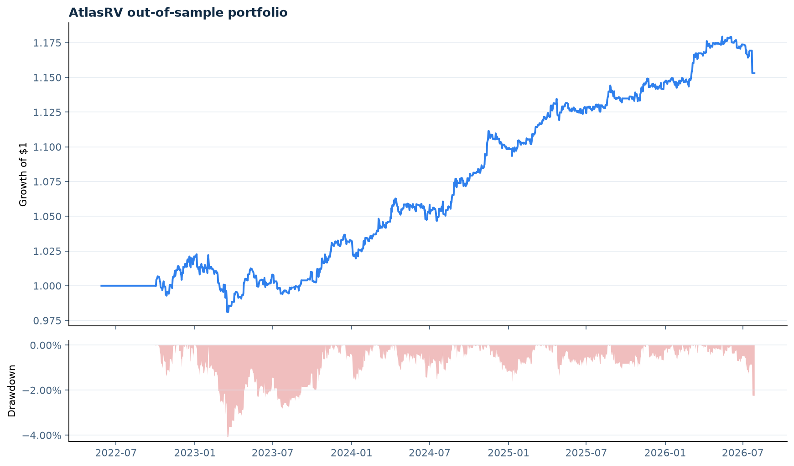

AtlasRV research dashboard
FRED public observed series (real-data stress study; research gate enforced) · causal cross-asset relative value
Sharpe0.86
Annual return2.38%
Annual volatility2.79%
Maximum drawdown-4.08%
Effective bets2.50
Causal out-of-sample portfolio

Research gate
| Relationship | p-value | FDR q-value | Half-life | Beta instability | Decision |
|---|---|---|---|---|---|
| wti_brent | 0.0000 | 0.0000 | 7.8d | 0.6% | PASS |
| treasury_2y_1y | 0.0000 | 0.0000 | 15.6d | 13.3% | PASS |
| sp500_dow | 0.0189 | 0.0302 | 50.1d | 13.3% | PASS |
| nasdaq_sp500 | 0.1480 | 0.1480 | 151.5d | 36.9% | REVIEW |
| euro_sterling | 0.0258 | 0.0343 | 47.2d | 33.1% | PASS |
| hy_ig_credit | 0.0004 | 0.0010 | 16.2d | 10.0% | PASS |
| vix_curve | 0.0801 | 0.0915 | 14.1d | 3.8% | REVIEW |
| bitcoin_ether | 0.0150 | 0.0300 | 70.7d | 83.7% | REVIEW |
Performance by ex-ante regime
| observations | annualized_return | annualized_volatility | sharpe | max_drawdown | |
|---|---|---|---|---|---|
| regime | |||||
| high_vol__down | 40.000 | 0.041 | 0.022 | 1.843 | -0.004 |
| high_vol__up | 539.000 | 0.044 | 0.028 | 1.559 | -0.014 |
| low_vol__down | 182.000 | -0.031 | 0.029 | -1.040 | -0.026 |
| low_vol__up | 762.000 | 0.022 | 0.028 | 0.801 | -0.043 |
Deterministic benchmark
atlas-rv research --provider synthetic --config configs/universe.yml --output reports/researchResearch software only. FRED levels are observed public series, not necessarily executable total-return instruments.